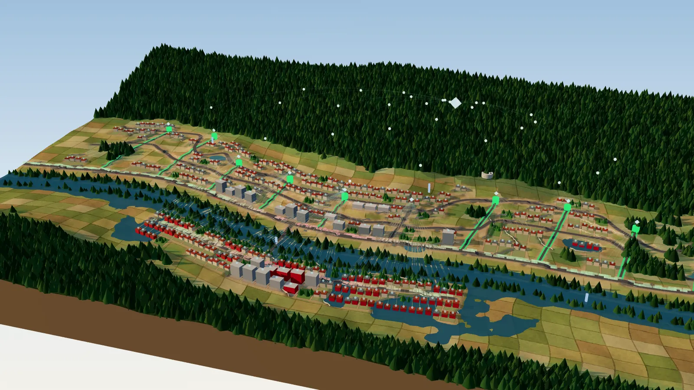

GIS Foundation for a City Twin
Every digital twin starts as a geospatial database: terrain, imagery, land use, roads, drainage, utilities, buildings and people, held in one consistent coordinate system.
From a GIS database to a city that is monitored, understood and protected before disaster strikes: the long-term direction of my work.

Loading the city model
Simulated dataEach stage builds on the one before. The status label shows where my professional work stands today.
Every digital twin starts as a geospatial database: terrain, imagery, land use, roads, drainage, utilities, buildings and people, held in one consistent coordinate system.
Hazards are introduced into the GIS model to find where flooding, landslides, ground shaking and fire would do most harm, and who and what is exposed.
Risk results become planning decisions: protected corridors, hazard-sensitive zoning, road and drainage networks and green space laid out so that new development avoids harm.
Each building and asset gets a 3D model and, where it matters, sensors, so the physical city is connected to its digital copy.
Machine learning turns streams of sensor, satellite and weather data into an understanding of how the city is behaving now and what is likely next.
The twin is used before an event, not only after it: forecasting a flood from rising rainfall, issuing evacuation routes, and testing how the city copes with an earthquake or fire.
Maps and plans describe a city at one moment. A digital twin keeps that description current: sensors report what is happening, models estimate what is likely next, and the 3D city shows where it matters. The aim is to act before a flood arrives, not to map it afterwards.
My work today covers the foundation: GIS databases, hazard and risk analysis and risk-sensitive planning, with BIM coordination as my current role. Live sensors and machine-learning forecasting are the next steps I am working toward.
| Today | Simulated on this site | |
|---|---|---|
| GIS database and hazard maps | Done in my planning projects | The illustrative valley and its layers |
| Zoning and planning | Done in my planning projects | The illustrative town plan |
| 3D and BIM models | Professional BIM coordination | Building models in the scene |
| IoT sensors and data | Not yet | All sensor readings and the dashboard |
| AI forecasts | Research goal | Flood forecast, heat, AQI, traffic and damage estimates |
Flood susceptibility, buildings, roads, population and emergency access: which infrastructure and communities are exposed, and how people reach safety.
Road networks, traffic demand, transport capacity and infrastructure assets, to compare planning scenarios.
Satellite land-surface temperature, vegetation, buildings and temperature sensors, to study urban heat.
| Phase | Goal | Evidence of success |
|---|---|---|
| 1. Real-data city model | A Nepali municipality in CesiumJS with open terrain, imagery, building footprints and roads | A public, georeferenced 3D model |
| 2. Hazard layers | Flood susceptibility and exposure from my GIS workflow added to the model | Exposed buildings and roads counted and mapped |
| 3. Live data | Open weather and rainfall feeds, then a small sensor pilot | Readings shown in place, updated automatically |
| 4. Prediction | A machine-learning model for flood or urban heat, validated against observations | Reported accuracy and stated uncertainty |
A production twin would use georeferenced 3D city data (for example CesiumJS with 3D Tiles), live sensor APIs and trained, validated models. This demonstration uses three.js and simulated data, with the same structure.